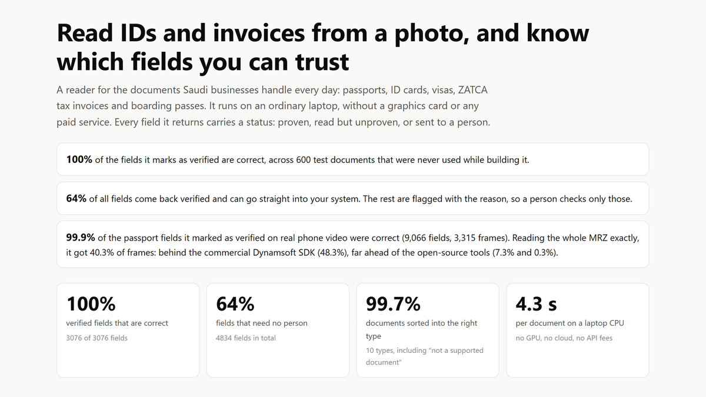

Read IDs and invoices from a photo, and know which fields to trust
I built a reader for passports, ID cards, visas, ZATCA tax invoices and boarding passes. It checks every field before it reaches your system.
- My role
- I built the whole project, from the document reader to the 600-document test and the real-photo benchmark.

100%
of the fields it marks as verified are correct
3,076 of 3,076, on 600 documents it never saw
64%
of all fields go into your system with no person checking
99.9%
of verified passport fields correct on real phone video
9,066 fields from 3,315 frames
4.3 s
per document on an ordinary laptop, no paid service
The problem
Travel agencies, hotels and finance teams in Saudi Arabia retype passports, IDs and supplier invoices by hand every day. Reading tools exist, but they give you text, not certainty: you still don't know which values are right. A wrong passport number on a booking or a wrong VAT amount in the accounts costs far more than the time saved. The useful question is not "can a machine read this?" but "which of these values can I trust without checking?"
How it works
Step 1 / 5
Straighten the photo
The reader finds the document's four corners in a phone photo and flattens it, the way a scanner app does.
Step 2 / 5
Read codes and text
It decodes the ZATCA QR code and the boarding-pass barcode, then reads the text twice: once for English and numbers, once for Arabic.
Step 3 / 5
Check against the standard
Passports carry check digits, invoices carry a QR code and VAT must be 15%. A value counts as proven only when one of these checks confirms it.
Step 4 / 5
Give every field a status
Each field comes back verified, read, or for review, with the reason. A person checks only what the reader could not prove.
Step 5 / 5
Test it honestly
600 test documents in 10 types, a third of them in designs it never saw, plus 3,315 real phone-video frames of passports from 12 countries.
Results
600 test documents and 3,315 real frames · October 2026
- Every one of the 3,076 fields it marked as verified was correct, on scans, phone photos and difficult photos alike.
- 64% of all fields needed no person. On difficult photos (tilted, blurred, shadowed) that drops to 42%, but the error rate does not rise. The reader just sends more to review.
- On real phone video of passports, 99.9% of the fields it verified were correct. It read the whole passport code line exactly in 40% of frames: behind the commercial Dynamsoft SDK (48%), far ahead of free tools (7% and 0.3%).
- It sorted 598 of 600 documents into the right type, including documents it should not try to read.
How this can help your business
Faster bookings
Photograph a passport and get passenger data that is checked before it reaches the airline.
Cleaner accounts
Supplier invoices matched to their ZATCA QR code. A printed total that disagrees with the code is flagged.
Know what to check
Your team reviews only the fields the reader could not prove, with the reason shown.
Travel agencies, hotels, clinics, banks and finance teams — anyone who types data from passports, IDs or invoices into a system.
Good to know
- The 600 test documents are fictional specimens I generated; no real customer document was used. A business would confirm the automation rate on its own documents. The real-photo test uses public specimen passports.
- Some fields can never be proven from a photo, such as an invoice number or a name in Arabic. They come back as "read" for a quick human look.
- The real-photo test is not fully blind. Halfway through it I found and fixed two rules that let wrong values through, then ran everything again.
Images
Technical detailsFor engineers and recruiters
- Python
- OpenCV
- RapidOCR
- ONNX Runtime
- PP-OCRv6
- zxing-cpp
- Playwright
- pytest
- OCR on CPU with RapidOCR: PP-OCRv6 small for detection and Latin recognition, PP-OCRv5 Arabic for Arabic (PP-OCRv6 does not cover Arabic yet). Each line keeps both readings, and on the MRZ the check digits choose between them.
- Standards implemented from the specifications: ICAO 9303 MRZ (TD1, TD2, TD3, MRV-A/B), ZATCA e-invoice QR (TLV, phases 1 and 2), IATA BCBP boarding passes. Perspective correction with Canny edges and a four-corner contour search (OpenCV).
- A check digit is blind to G/6, S/8 and L/1 (values 10 apart), and on real photos two misreads can cancel out. So a document number is verified only when the printed number on the page matches. Both cases have regression tests.
- Test data: 14 HTML designs rendered with headless Chrome, then degraded to scans and phone photos (perspective, blur, shadow, glare, JPEG); 3 designs held out. Real photos: the curated MIDV-500 MRZ benchmark (3,315 frames).
Let's talk about your project
Tell me what you're trying to fix or find out. I'll reply with a clear plan: the steps, the timeline, and what it would cost to run.